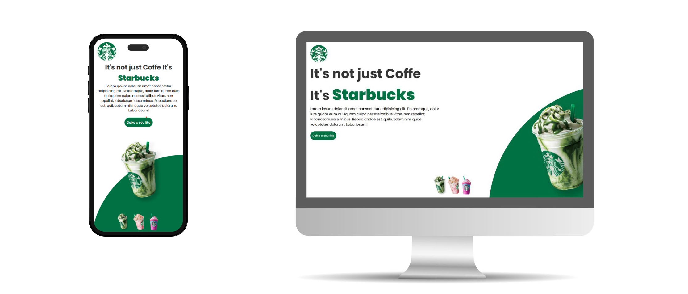
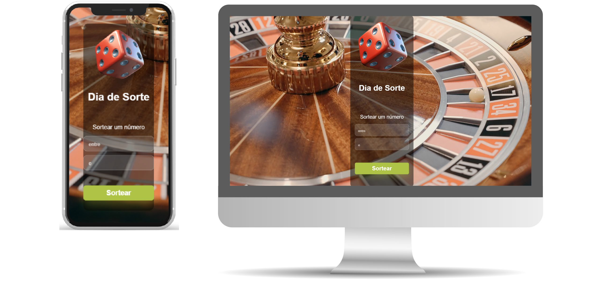
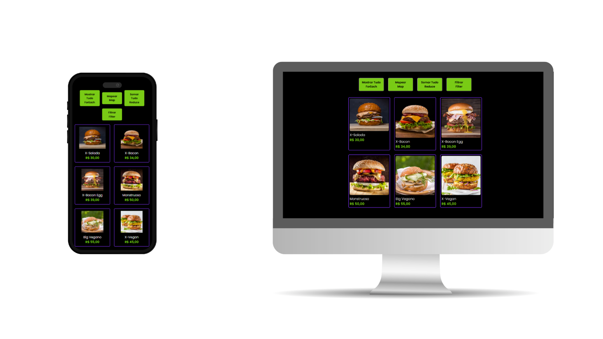
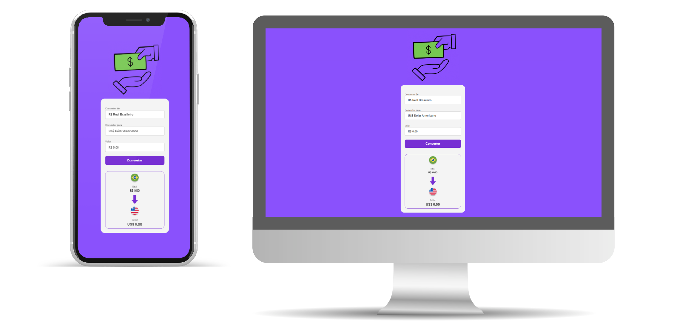
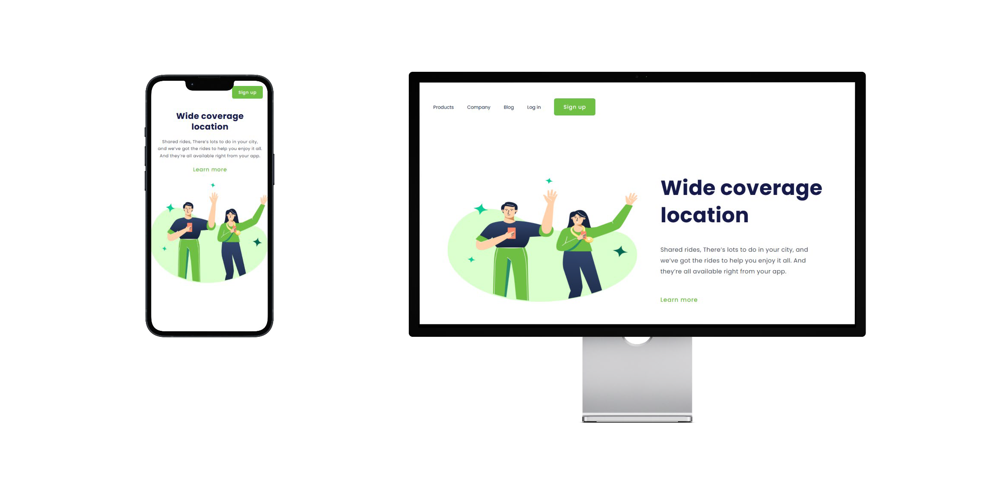

Tenho 32 anos e sou um profissional em transição de carreira para a área de Tecnologia, focado em Desenvolvimento Front-End. Tenho experiência prática na criação de interfaces com HTML5, CSS3 e JavaScript, e venho aprofundando meus conhecimentos em ecossistemas modernos como React.
Movido pela resolução de problemas e pelo aprendizado contínuo, busco oportunidades para aplicar minhas habilidades no desenvolvimento de soluções web eficientes, escaláveis e funcionais.
Além de tecnologia gosto de animais e música.
CurrículoEste projeto é uma Landing Page inspirada no Starbucks, desenvolvida para treinar habilidades em HTML, CSS e JavaScript. O foco foi construir uma interface moderna, responsiva e interativa, simulando uma página de apresentação de produto.

Um pequeno projeto desenvolvido para gerar números aleatórios de forma simples, visual e divertida. Ideal para sorteios, brincadeiras ou jogos rápidos. O design conta com um fundo em vídeo e interface totalmente responsiva, adaptando-se a qualquer tamanho de tela.

É uma aplicação web interativa criada para demonstrar na prática o poder e a elegância dos principais métodos de iteração de arrays do JavaScript.
Simulando a interface de um cardápio digital de uma hamburgueria artesanal, a aplicação permite ao usuário manipular dinamicamente uma lista de produtos em tempo real — calculando descontos, filtrando preferências alimentares e somando valores totais com apenas um clique.

Um conversor de moedas moderno e funcional, desenvolvido para transformar valores em Real (BRL) para Dólar Americano (USD), Euro (EUR) ou Libra Esterlina (GBP). O projeto foi criado com foco em simplicidade, usabilidade e design responsivo, combinando boas práticas de HTML, CSS e JavaScript.

Esse projeto faz parte dos meus estudos de desenvolvimento web, aplicando conceitos aprendidos em HTML e CSS.

Gostou do meu trabalho? Vamos conversar!
WhatsApp